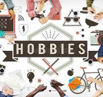
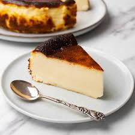
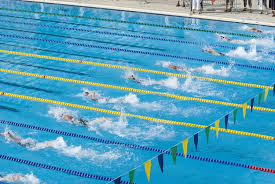

I love baking because I can experience difference tastes and flavors to find something I like. Like when I mixed cheese and lemon to get this tangy and creamy cheese cake.
Coding is one of my favorite hobbies since it can be used to create beautiful and creative websites and applications. It is an essential skill that I hope I can master someday.

I have always loved swimming whether it was at the beach or at a swimming pool. My father first taught me when I was 12 and I have been improving ever since. Although this sport is crucial to know, I can not practice it often since it gets cold in the winter.
